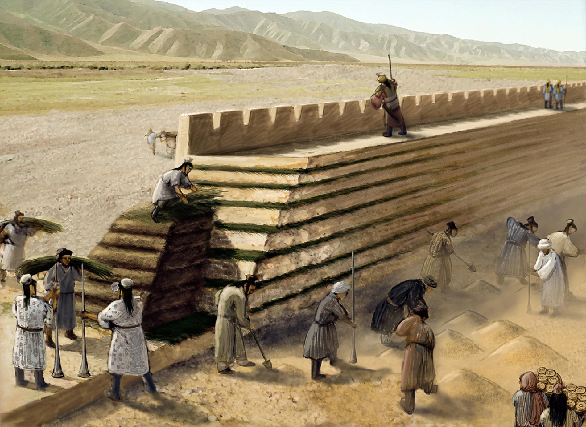
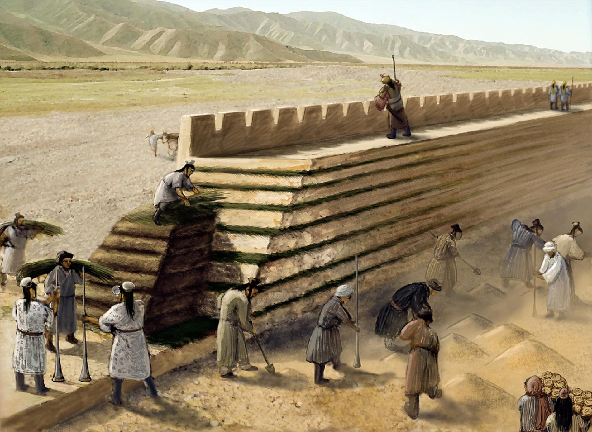
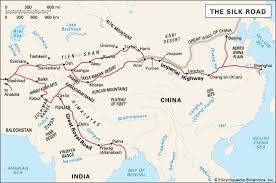
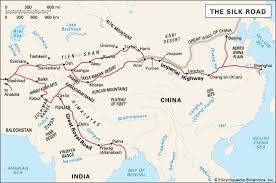

Primele dinastii cunoscute sunt Xia, Shang și Zhou, în care s-au format primele orașe și scrierea chineză.
În timpul dinastiei Qin (221 î.Hr.), țara a fost unificată pentru prima dată, iar împăratul Qin Shi Huang a început construcția Marelui Zid Chinezesc.
 

Dinastia Han a adus o perioadă de mare prosperitate, când China a deschis Drumul Mătăsii, făcând comerț cu Europa.
 
